CS184 Summer 2025 Homework 3 Write-Up
Link to webpage (and images): github.com/cal-cs184/hw-webpages-su25-Echoooggu/blob/main/hw3/index.html
Link to GitHub repository (codes): github.com/cal-cs184/hw-pathtracer-updated-fishros_version3
Overview
Basically, we implemented how to render a scene by mainly using Monte Carlo Sampling for path tracing. Starting from generating camera rays, we calculate the intersections of the rays and the objects, and compute the illuminance (direct first, and then indirect, and then sum them up to get global). Along the journey, simple visualization is not enough. We tried different algorithms to speed up the rendering process, or/and improve the quality of the image. These include BVH (Bounding Volume Hierarchy), Importance Sampling, Russian Roulette, and Adaptive Sampling.
Problems encountered: Part3 and Part4 are especially difficult to debug. Part5 also took a few hours. At last we solved our problems with the help of TAs. We learned that sometimes the problems are not with the algorithms or major part of the codes, but really tiny details that we missed or misunderstood.
Acknowledgement of AI:
1. Part3Task4: Our rendered images looked a bit dimmer than the reference images, so we asked ChatGPT for help.
But GPT couldn't solve it, nor could Cursor or Claude, so eventually we went to OH and found that our EPS_F was offset.
2. Part4Task2: We found that our categorization was a bit messy.
Initially, we categorized the cases into: first judge whether the rays can hit another object,
and then categorized based on isAccumBounces.
But it turned out that it'd be better to think about if we first categorize using isAccumBounces, which is what we learned by using Claude.
Then we reorganized our codes.
3. Part4Task3: We didn't really understand Russian Roulette, so we used Claude to update the codes from task2.
Then, we managed to understand it, also using the codes to understand knowledge we learned in slides, and then replicated it.
Part 1: Ray Generation and Scene Intersection
Results of Part1:
|
|

|
1. Ray generation:
In ray tracing, rendering starts by shooting rays from the camera into the scene to determine what is visible at each pixel. For each pixel on the image plane, we compute normalized coordinates (x, y) representing the pixel’s location on the camera’s image sensor, normalized to [0,1]. These normalized coordinates are then transformed into coordinates on the camera’s viewing plane which maps to physical locations in the camera’s coordinate system. Using the camera’s parameters such as field of view and orientation, we construct a ray starting from the camera position, pointing through that pixel’s location on the viewing plane. This ray is represented by an origin point and a direction vector. The key purpose here is to translate 2D pixel positions into 3D rays that simulate light paths coming from the camera into the scene.
2. Primitive intersection:
For triangles, we implemented the Möller–Trumbore intersection algorithm. This method transforms the intersection problem into a system of linear equations by expressing the intersection point as a combination of triangle edges and solving for barycentric coordinates. If these coordinates fall within the triangle (u ≥ 0, v ≥ 0, and u + v ≤ 1), and the intersection t lies within the valid ray segment ([min_t, max_t]), then the triangle is considered hit. Upon a valid hit, the ray’s max_t is updated to the nearest intersection point, helping to cull farther intersections during traversal. For spheres, the intersection test solves the quadratic equation derived from substituting the ray equation into the implicit equation of a sphere. The two roots represent the possible intersection points. We select the valid root that lies within the ray's bounds and update the ray accordingly. If an intersection is found, we record the hit time, surface normal (from sphere center to the hit point), and material information.
3. Triangle intersection algorithm:
In our implementation, we used the Möller–Trumbore algorithm to determine whether a given ray intersects a triangle. The process begins by computing two edge vectors of the triangle based on its three vertices. Then, we calculate a vector that is perpendicular to the ray direction and one of the triangle's edges. This helps compute a value called the determinant, which tells us whether the ray and the triangle are nearly parallel. If the determinant is close to zero, there's no intersection. If the determinant is non-zero, we proceed to compute the u and v barycentric coordinates of the intersection point. These coordinates tell us whether the intersection point lies inside the triangle. If u < 0, v < 0, or u + v > 1, then the point is outside the triangle, and we reject it. Finally, we calculate the t-value (how far along the ray the intersection occurs). If t falls within the valid range defined by the ray (between min_t and max_t), we confirm an intersection. The ray's maximum t is updated so that future intersections only consider closer objects.
Here are also some .dae files with normal shading: (which are also rendered in Part2, but with a much slower rendering speed)
|
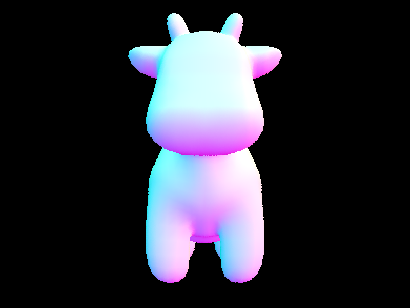
|
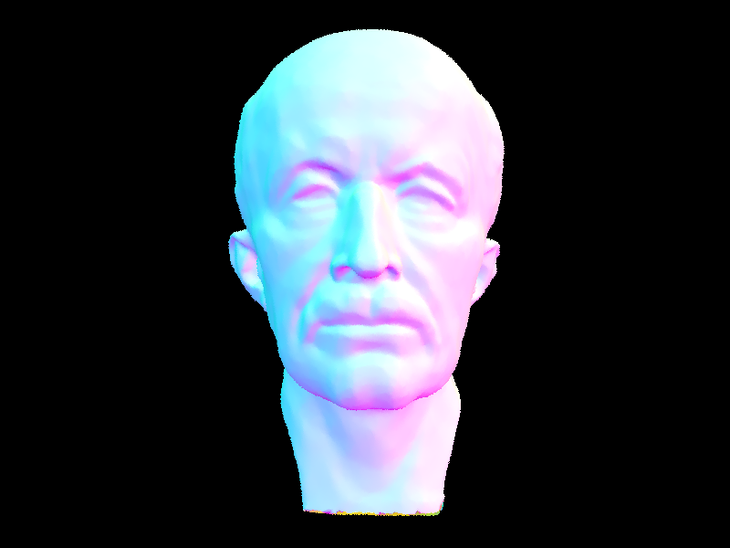
|
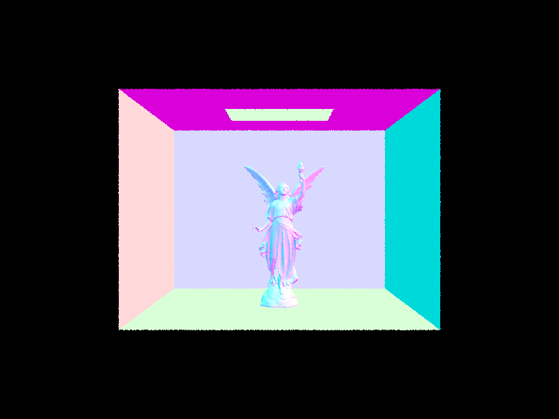
|
Part 2: Bounding Volume Hierarchy
1. BVH Construction and Splitting Heuristic
In our implementation of construct_bvh, we recursively construct the BVH tree using the primitives provided in the input. The process begins by computing a bounding box that encloses all primitives in the current range. This bounding box determines the spatial extent of the current BVH node.
To decide whether the current node is a leaf, we use two criteria. The first one is the number of primitives in the range is less than or equal to max_leaf_size, another is that all primitives share the same centroid along the longest axis . If either condition is met, we construct a leaf node by storing pointers to the primitives.
Otherwise, we proceed to split the primitives into two halves. To determine the splitting axis, we calculate the extent of the bounding box along the X, Y, and Z axes and select the axis with the largest extent. This ensures that we divide along the most "spread-out" direction, which helps improve spatial partitioning.
After selecting the splitting axis based on the longest extent of the bounding box, we organize the primitives according to the position of their bounding box centroids along this axis. Specifically, we sort the primitives so that those with smaller centroid coordinates along the chosen axis come before those with larger coordinates. This ordering helps us to spatially partition the primitives into two balanced groups.
Instead of simply splitting at the average centroid value, we choose the splitting point as the median centroid coordinate, corresponding to the primitive at the middle index of the sorted list.
Finally, we recursively build the left and right child nodes using the two halves of the primitive list, and return a BVHNode that represents the internal node with bounding box and child pointers.
2. Impact of BVH Acceleration on Rendering Performance
Using BVH acceleration significantly improves rendering performance, especially for scenes with moderately complex geometries. For instance, in the "cow" scene, rendering without BVH took 1.65 seconds, while with BVH it only took 0.0256 seconds — a speedup of over 64 times. In a second scene, rendering time dropped from 18.4412 seconds without BVH to just 0.0343 seconds with BVH, showing a speedup of more than 500imes. Similarly, in a third scene, the BVH-accelerated rendering completed in 0.0278 seconds compared to 123.8051 seconds without BVH — a staggering improvement of over 4,000times. These results clearly demonstrate the effectiveness of BVH in reducing the number of intersection tests and accelerating the rendering process.
|
|
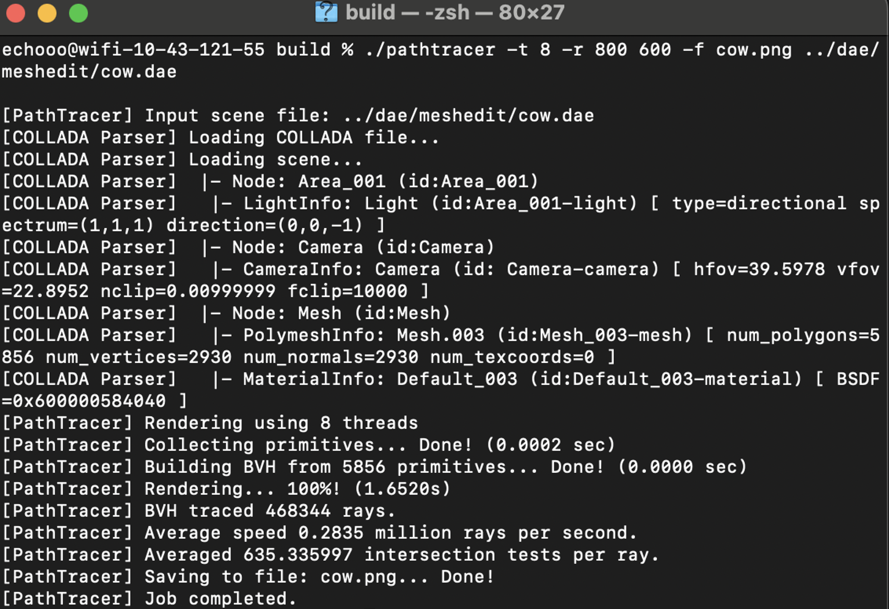
|
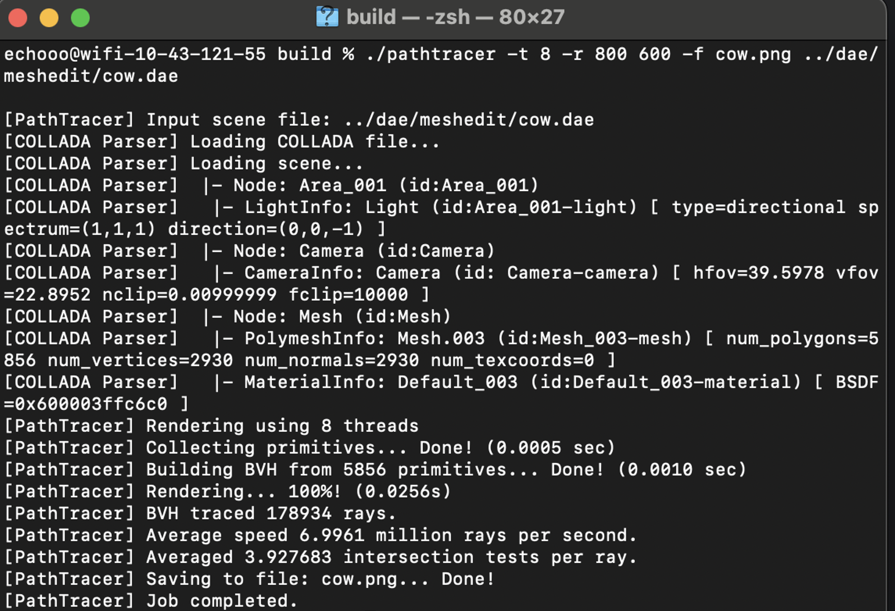
|
|
|

|
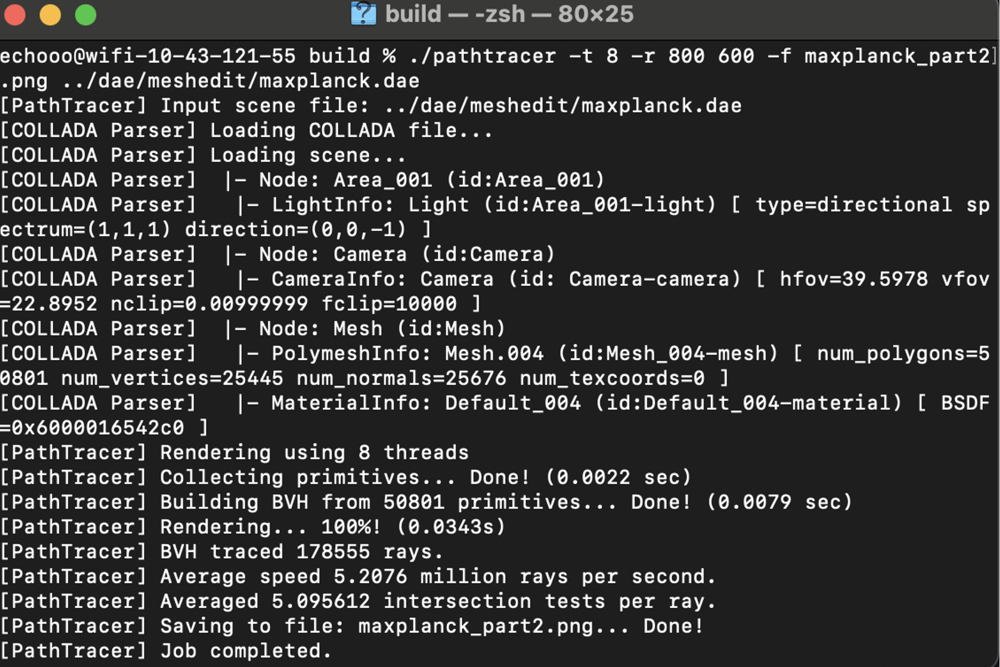
|
|
|

|
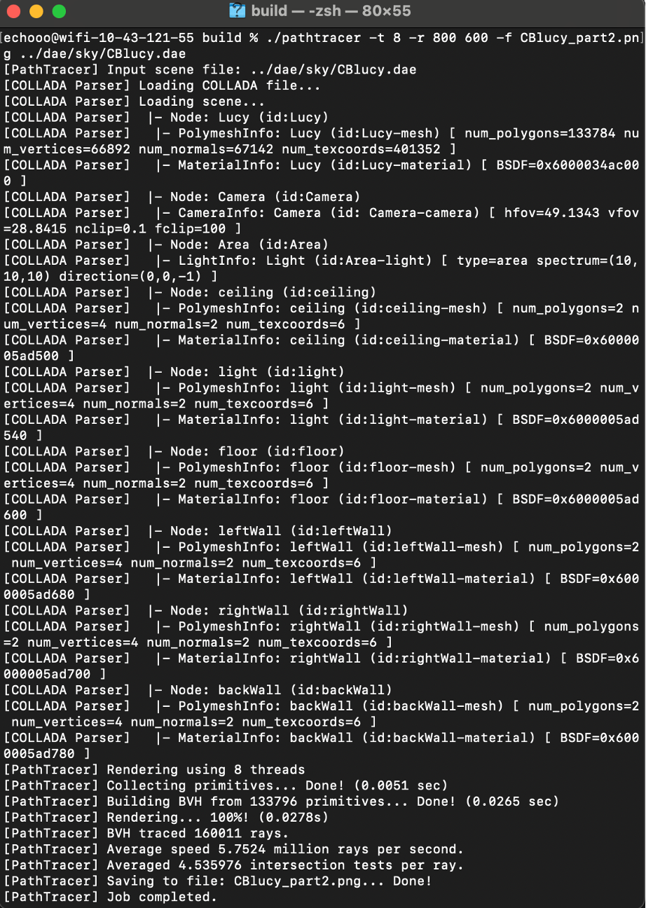
|
Part 3: Direct Illumination
1. Implementation Overview of Direct Lighting Functions
a. Vector3D PathTracer::estimate_direct_lighting_hemisphere
In our implementation of estimate_direct_lighting_hemisphere,
we estimate direct lighting by uniformly sampling directions over the hemisphere centered around the surface normal at the intersection point.
This approach follows a Monte Carlo integration strategy,
where we randomly sample directions and accumulate radiance contributions from light-emitting surfaces that are visible along those directions.
We begin by constructing a local coordinate system at the intersection point such that the Z-axis aligns with the surface normal. This coordinate frame allows us to convert both the incoming and outgoing directions between world space and local shading space, where BSDF evaluation is more convenient. We then compute the hit point and outgoing direction in the local coordinate system.
We determine the number of samples by multiplying the number of lights in the scene by the number of area light samples (ns_area_light). For each sample, we randomly generate a direction w_in over the unit hemisphere using uniform sampling. This direction is then transformed into world space, and a shadow ray is cast from the surface point toward this direction. If the shadow ray intersects an object and the intersected object is emissive, we treat it as a contribution to direct illumination.
The radiance contribution for each valid sample is calculated using the rendering equation, including the surface BSDF, the emitted light from the intersected point, and the cosine of the angle between the incoming direction and the surface normal. We accumulate these contributions over all samples.
Finally, since we are using uniform sampling over the hemisphere, we multiply the average contribution by 2π to account for the solid angle of the hemisphere. This results in an unbiased estimate of the direct illumination at the surface point.
b. Vector3D PathTracer::estimate_direct_lighting_importance
At each intersection, we construct a local coordinate frame aligned with the surface normal to simplify calculations in the shading space. We then iterate over all lights in the scene. For delta lights, such as point or directional lights, we take a single sample since they emit light from a single direction. For area lights, we take multiple samples. For each light sample, we obtain a direction toward the light and an associated radiance value and probability density. We then perform a shadow ray test to check for occlusion: if another object blocks the path to the light, we discard the sample. If the path is clear, we evaluate the surface BSDF to determine how much of the incoming radiance is reflected toward the camera, and we scale the contribution by the cosine of the incident angle and the inverse of the sampling PDF. These contributions are accumulated and averaged over all valid samples to produce the final estimate of direct lighting.
2. Visual Results: Hemisphere vs. Importance Sampling
Shadow quality:
Hemisphere Sampling produces noisy soft shadows, especially under area lights. The shadows tend to be grainy unless a high number of samples are used.
Importance Sampling yields smoother, more realistic soft shadows even with fewer samples.
Rendering efficiency:
For Hemisphere Sampling, many samples are wasted in directions that contribute no direct lighting.
However, for Importance Sampling, nearly all samples are useful, leading to better results per sample.
(CBbunny.dae, -s 64, -l 32, -m 6)
(CBbunny.dae, -s 64, -l 32, -m 6)
3. Noise Analysis in Soft Shadows with Varying Light Samples (importance sampling)
The results below show a clear trend: as the number of light rays increases, the soft shadows become noticeably smoother and less noisy. With only 1 light sample, the shadows appear extremely grainy and unstable. At 4 samples, the noise is slightly reduced but still visually distracting. With 16 light rays,much of the high-frequency noise is suppressed. Finally, at 64 light rays, the shadows are significantly cleaner, with soft penumbra transitions and minimal noise. This confirms that increasing the number of light samples improves the estimation of area light contributions and leads to more realistic and stable shadow rendering, even with just one pixel sample.
|
|
|
|
|
|
ps. other images mentioned in the spec:
|
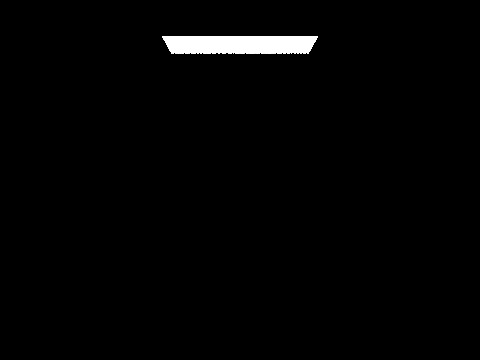
(CBbunny.dae, -s 16, -l 8) |
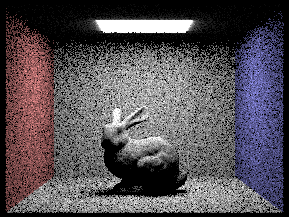
(CBbunny.dae, -s 16, -l 8) |
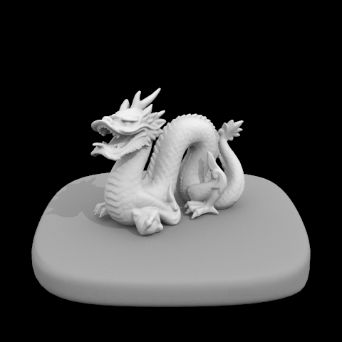
(CBdragon.dae, -s 64, -l 32, -m 6) |
Part 4: Global Illumination
1. Implementation of the indirect lighting function (mainly at_least_one_bounce_radiance(…))
a. Construct an orthonormal basis (o2w) and take its transpose (w2o)
b. Sample an incoming light direction w_in based on the outgoing direction w_out, and calculate the BSDF value for this pair.
c. Set up a new ray for indirect bounce (The sampled w_in in object space is transformed into world coordinates.) (details: use EPS_F to avoid self-intersection)
d. Accumulated bounces:
(i) if the new ray hits another object,
then recursively compute incoming radiance,
weight it by the BSDF f, cos_theta, and divide by pdf.
Here we get indirect_contribution.
If Russian Roulette is applied, divide further by the continuation probability to maintain unbiasedness.
(ii) If the ray hits no object, but an environment light exists,
then sample the light directly in the direction of the ray.
Same BSDF and weighting logic applies and we get indirect_contribution.
In both cases, indirect_contribution is accumulated to L_out.
e. Unaccumulated bounces:
only the current bounce level is evaluated.
The formula for calculating indirect_contribution is still the same (see below image).
2. Bunny rendered with global (direct and indirect) illumination. Use 1024 samples per pixel.
3. Pick one scene and compare rendered views first with only direct illumination, then only indirect illumination. Use 1024 samples per pixel.
Only direct illumination (i.e. zero-bounce && one-bounce): looks more realistic and brighter than images with only indirect illumination.
Only indirect illumination (i.e. ! zero-bounce && one-bounce): looks much dimmer as if it's fading.
However, if we compare this image with the one with only the m-th bounce (m > 1), this one is brighter as it is the sum.
And if we compare this image with the one with only 2nd bounce,
shadows in this image are less distinct as the m-th bounces (m > 2) smooth it out.
4. CBbunny.dae with max_ray_depth set to 0, 1, 2, 3, 4, and 5 (the -m flag), isAccumBounces=false, -s 1024
(Explain in your write-up what you see for the 2nd and 3rd bounce of light,
and how it contributes to the quality of the rendered image compared to rasterization.)
a. What We See for the 2nd and 3rd Bounce of Light (with isAccumBounces = false):
(i) 2nd bounce:
Much darker than the 1st bounce of light, as if the image is fading.
Direct lighting (including emission and one-bounce) are missing.
Shadows are less distinct from the lighting regions.
The light looks gentler and smoother.
(ii) 3rd bounce:
Even dimmer than the 2nd bounce of light. Direct lighting is still missing.
There’s no obvious shadows because the whole scene is dark. Light looks even smoother.
b. How it contributes to the quality of the rendered image compared to rasterization:
Rasterization typically only includes direct lighting and uses hacks (like ambient occlusion) to fake indirect illumination. Isolated 2nd and 3rd bounces expose how indirect light alone behaves.
c. Compare rendered views of accumulated and unaccumulated bounces for CBbunny.dae with max_ray_depth set to 0, 1, 2, 3, 4, and 5 (the -m flag). Use 1024 samples per pixel.
(i) Accumulated:
In a full rendering (with accumulated bounces),
every layer of bounces adds soft shadows, light bleeding, and fill light into areas that would otherwise be too dark.
As we add on the maximum ray depth (i.e. the -m flag), the view becomes brighter as there are more lighting adding on.
(ii) Unaccumulated:
Radiance decreases as the number of bounces increases.
Thus, as we add on the maximum ray depth (i.e. the -m flag),
the view becomes dimmer and dimmer.
| m = 0 | m = 1 | m = 2 | m = 3 | m = 4 | m = 5 | |
|---|---|---|---|---|---|---|
| isAccumBounces = false | 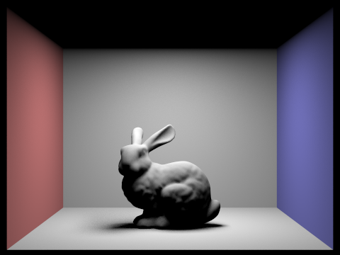 | 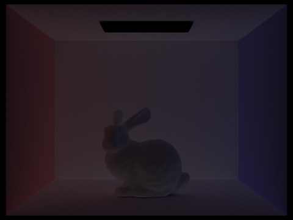 | 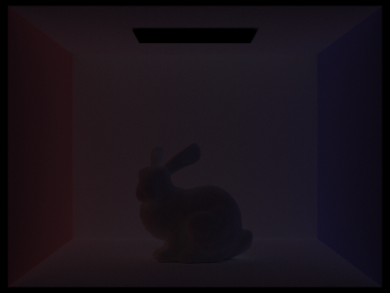 | |||
| isAccumBounces = true | 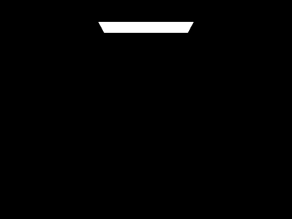 | 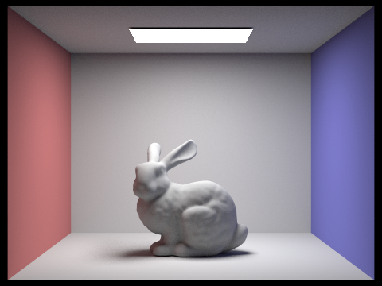 |
5. For CBbunny.dae, output the Russian Roulette rendering with max_ray_depth set to 0, 1, 2, 3, 4, and 100(the -m flag). Use 1024 samples per pixel.
|
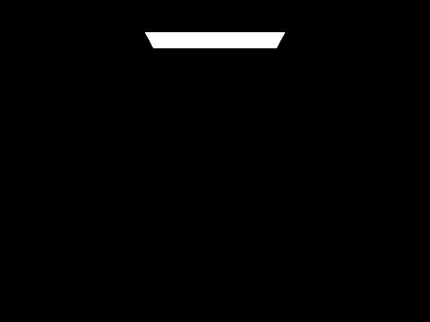
|
|
|
|
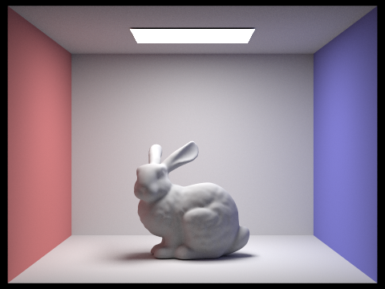
|
|
|
|
ps. other images using Raussian Roulette mentioned in the spec:
6. Pick one scene and compare rendered views with various sample-per-pixel rates, including at least 1, 2, 4, 8, 16, 64, and 1024. Use 4 light rays. (here we used -m to be 1)
As sample-per-pixel rates increase, the images become less noisy and coarse, and also become smoother.
Part 5: Adaptive Sampling
1. Explanation of Adaptive Sampling:
Adaptive sampling, utilizing confidence interval, is a technique in ray tracing that dynamically decides how many samples are needed per pixel, instead of always taking a fixed number. The idea is to reduce computation time while preserving image quality by stopping early on pixels that have already converged (i.e., their color estimate is stable enough).
2. Our Implementation of Adaptive Sampling:
a. Initialization:
For each pixel (x, y), we initialize accumulators for the pixel colors and for computing the statistics of illuminance.
Specifically, we track the sum of illuminance values, the squared sum of illuminance values, and the number of actual samples
to calculate the mean and variance of the sampled sub-pixel illuminance values later.
b. Sampling loop:
We loop up to a predefined maximum number of samples (max_samples). For each sample:
We generate a subpixel sample using gridSampler.
We compute a ray from the camera using that subpixel location.
We trace the ray through the scene using est_radiance_global_illumination(ray).
The returned radiance contributes to the pixel's color estimate.
We compute the illuminance (brightness) of the radiance and update s1 and s2.
c. Confidence check:
After each sample, we compute:
The mean illuminance mu
The sample variance
The standard deviation sigma
The confidence interval width I, using a 95% confidence interval approximation (see the formula below).
If this interval I is smaller than a user-defined tolerance maxTolerance × mu,
then we consider the pixel “converged” and break early from the loop (i.e. don't sample anymore).
d. Finalize pixel value:
Once sampling finishes (either by convergence or reaching the maximum sample count),
we average the total color estimate by the actual number of samples taken and update the sample and color buffers.
Two scenes with -s 2048, -l 1, -m 5:
THE END
This html is edited by Xiangru Huang, so here I use 'I':)
I'm really glad we found a partner—it’s like having a second brain,
which has made both work and study much more efficient.
Especially when we don’t have enough time to review before exams, we divide up the slides and teach each other.
This way, we use the Feynman learning method to solidify our own understanding
while also helping the other person quickly grasp the content of the slides.
We also split up the homeworks. After completing each part,
we explain to each other the implementation ideas and key details to watch out for.
This has made the heavy workload of this course a bit more manageable.
More importantly, as exchange students here, we don’t know many people,
and this course is particularly challenging for us.
So we’re not just studying together, but supporting each other like we’re “in the same boat.”
We’re both from the same university in mainland China, and we used to just casually greet each other.
Now, we’ve become much closer. I’m truly happy we’ve been able to collaborate,
share our excitement and anxiety, and learn from each other!